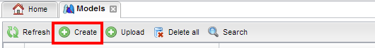

Account creation and login
- Make sure that you are registered as a tutorial user. Your home page should look like this:

Browse Model repository
You can browse models through a repository.
- To access to the repository; click on Models icon:

- You will see three models:
- Adam
- Extended Adam
- Zubal
- These models are referenced models for simulation.
- To view and explore a model, right click on the first and select "View model annotations".

- You can explore through the different layers (timepoint, instant, Object Layer) to look at the different objects composing a model.
Each object is labelised by a semantic term. The first model Adam only contains voxels and meshes objects.
If you come back to the model repository and select to view the second (Extended Adam), you will see the Physical parameters layers used for the simulations.
- Now, download a model by clicking the download button.
 .
Inspect the downloaded archive to control that voxel and meshes files are present. Note the presence of rdf file containing all the semantic aspect of models.
.
Inspect the downloaded archive to control that voxel and meshes files are present. Note the presence of rdf file containing all the semantic aspect of models.
- You can display a model by a right-click on laucnh simulation GUI.
Create-Annotate YOUR own model
First, download one of meshes object from the website
.
After, in the models repository tab, click on Create button:.
An empty model is automatically created with one timepoint and one instant by default. .
The page is divised in two sections: the left frame will contain the files you will add to your model.
The right model will contain your on-going model.
.
The page is divised in two sections: the left frame will contain the files you will add to your model.
The right model will contain your on-going model.
- Now, you will add the previous meshes object
 .
The selected file will be displayed in the left file
.
The selected file will be displayed in the left file .
You can add several files in the same way.
To add an object to model, you have to drag and drop the file on the right frame.
A dialog box will appear. That box allows to associate semantic terms to your objects.
In our example, search the appropriate semantic term in text field:.
The results will be displayed in the spreadsheet below. You can try several terms.
At the end, you have to select the right term by clicking it and validate it with OK button.
.
You can add several files in the same way.
To add an object to model, you have to drag and drop the file on the right frame.
A dialog box will appear. That box allows to associate semantic terms to your objects.
In our example, search the appropriate semantic term in text field:.
The results will be displayed in the spreadsheet below. You can try several terms.
At the end, you have to select the right term by clicking it and validate it with OK button.
- You have to rename your model by a right click on the right bar
 and select "Change model name".
and select "Change model name".
- Now, you can commit your model with the commit button .
- Your model is now displayed in the model repository.